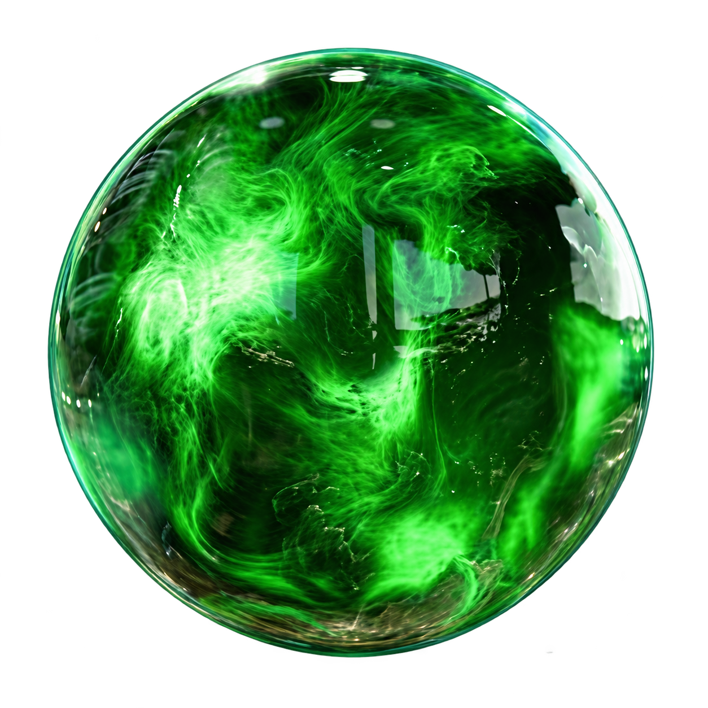

Battle System
Combat & Materia
Learn how Cloud combines sword techniques and Materia to control the battlefield.
Cloud's Combat Style
Cloud fights with large swords and powerful close-range attacks. His combat style combines strength, speed, defense, and special abilities to deal heavy damage to enemies.
Different weapons can change Cloud's stats and give him access to different abilities throughout battle.


Materia System
Materia allows Cloud to use magic, commands, summons, and support abilities.
Magic: Offensive and healing spells
Command: Adds special battle commands
Summon: Calls powerful creatures into battle
Support: Enhances other Materia effects